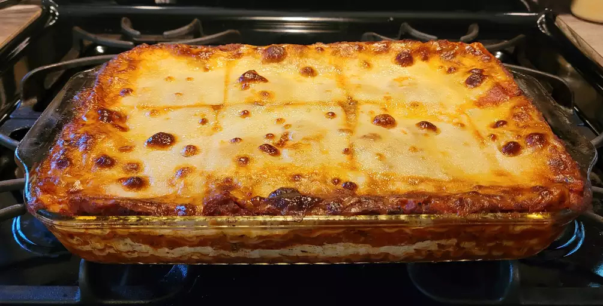

World's Best Lasagna Recipe

Description
When John Chandler submitted this lasagna recipe to Allrecipes more than 20 years ago, he had no idea how successful it would become.
One of our top-performing recipes of all time, World's Best Lasagna racks up more than 7 million views per year and has ranked among the most popular lasagna recipes on the internet for two decades.
Unfortunately, John unexpectedly passed away at 53 years old — read all about his life and legacy here.
Ingredients
- Meat: Sweet Italian sausage amd lean ground beef
- Onion and garlic: One onion and two cloves of garlic
- Tomato products: A can of crushed tomatoes, tow cans of tomato sauce, and two cans of tomato paste
- Sugar: Two tablespoons of white sugar
- Spices and seasonings: Fresh parsley, dried basil leaves, salt, Italian seasoning, fennel seeds, and black pepper
- Lasagna noodles
- Cheeses: Parmesan, mozzarella, and ricotta cheese
- Egg: One egg
Steps
- Make the meat sauce.
- Cook the noodles.
- Make the ricotta mixture.
- Layer the lasagna according to the recipes instructions.
- Cover with foil and bake.
- Let the lasagna rest before serving.
How to layer the lasagna
- Meat sauce
- Noodles
- Mixture
- Mozzarella slices
- Meat sauce
- Parmesan cheese
- Repeat teh layers, then top with the remaining Parmesan.